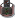

Artifacts >
Artifacts >
 Test Artifact Set >
Test Artifact Set >

Test Results
 Artifacts >
Test Artifact Set >
Artifact:
| ||||||||||||||||||||||||||||||||||
 Test Results |
A collection of summary information determined from the analysis of one or more Test Logs and Change Requests, providing a relatively detailed assessment of the quality of the Target Test Items and the status of the test effort. Sometimes referred to as a larger repository of many Test Results. |
| UML Representation: | There is no UML representation for this artifact. |
| Role: | Test Analyst |
| Optionality/ Occurrence: | We recommend you determine and record Test Results, and retain these results as an essential testing artifact. |
| Enclosed in: | One or more artifacts. Sometimes referenced from or enclosed directly within a Test Evaluation Summary. |
| Templates: | |
| Examples: | |
| Reports: | |
| More Information: | |
| Input to Activities: | Output from Activities: |
Test Results are used to record the detailed findings of the test effort and to subsequently calculate the different key measures of testing.
The information (as opposed to raw data) contained by the Test Results may vary depending on the technology and tools used both during test execution to capture the test log, and after the fact to conduct analysis of the raw Test Log data. Here are some ideas for data that can be determined, and made available for review and evaluation:
There are no UML representations for these properties.
|
Property Name |
Brief Description |
| Name | An unique name used to identify these Test Results. |
| Description | A short description of the contents of the Test Results, typically giving some high-level indication of complexity and scope. |
| Purpose | An explanation of what these Test Results represents and why they are important. |
| Dependent Test and Evaluation Items | Some form of traceability or dependency mapping to specific elements such as individual requirements that need to be referenced. |
The Test Results need to be determined whenever test and evaluation execution occurs. Since test execution may occur many times during the development lifecycle, test results should be determined and stored in such a way that they can be reviewed and evaluated individually for each instance of test execution.
The Test Analyst role is primarily responsible for this artifact. Those responsibilities include:
If you are using automated test tools, such as those found in Rational Suite or Test Studio, a lot of the determination of the above information can be simplified by the analysis capabilities of the tools. The tools also offer saved and customizable views of the information for reporting purposes.
|
Rational Unified
Process
|